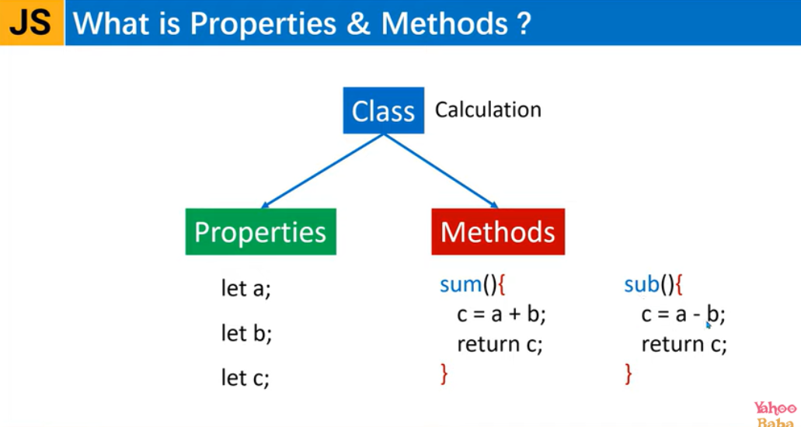
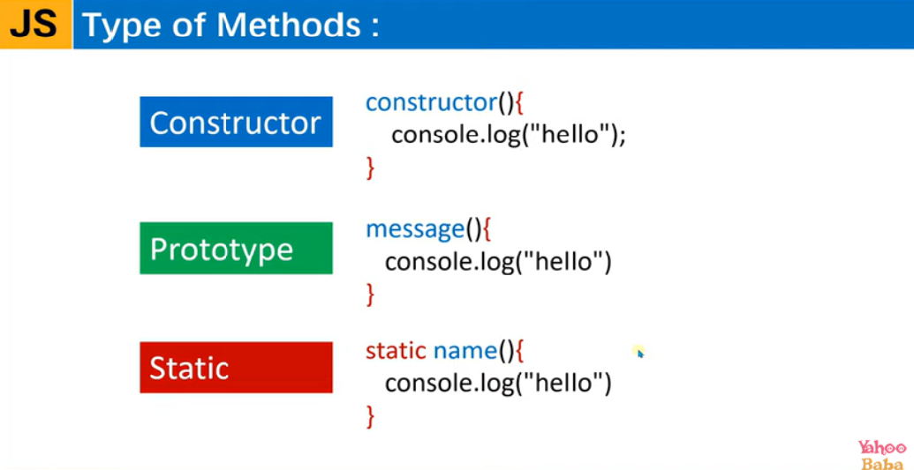

We can have the variables of the class.
All the function inside the class is called methods. We can add multiple function inside the class
Note: function keyword is not allowed inside class

This is the default method of class and this is executing by default while initiating the class
When we are creating the function inside the class it becomes the Prototype method in class
Static can not be called after constructor. I mean you can not call while object passing using new keyword.
you will get an error : staticMethod is not a function